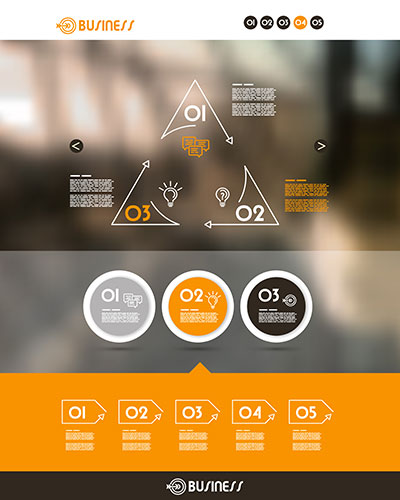

Common Sources for Occupational Research
Review the following common sources of information and resources that can help you with your occupational research.
Click each area to learn more.
Websites
Many websites that provide extensive information on occupations can be accessed through LRC Guides (e.g. Company Research Guide or Career Development ) or by conducting an Internet search on a particular occupation. Be critical of what you read: sites sponsored by governments, educational organizations, or professional associations are often more credible than personal websites. Information found in a number of sources is probably reliable.
To help you decide if a website is trustworthy, use the CARS Evaluation checklist . Also review this Credible Sources sheet.
Job Sites

Online job sites and want ads in newspapers can also give you an idea of the types of jobs available related to various occupations and their entry requirements. The Career Development Guide available through the LRC features links to some of the more popular job sites.
The LRC
The Library Resource Centre (LRC) offers a variety of print and online resources on specific careers, associations, careers to pursue with a certain major, and careers relating to particular interests or personal attributes. You can search directly using the Discover Service .
References:
University of Waterloo (2004). Career Development eManual: Occupational Research. Retrieved December 23, 2015 from https://emanual.uwaterloo.ca/b/occupational_research/default.aspx.